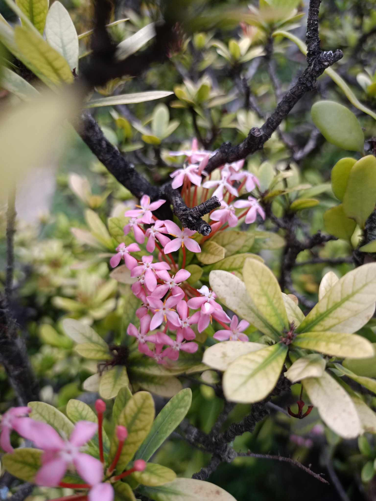
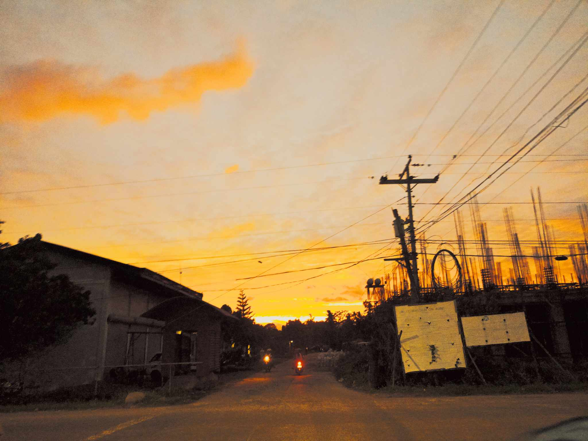

NATURE AND PHOTOGRAPHY
Hi! I'm Mary Angelie.
Hello. My name is Mary Angelie Pojas. I am a passionate photographer who enjoys sceneries
and nature. My main hobby is taking pictures of my surroundings as I appreciate the beauty
that God has given to us.
Pink Flowers and Yellow Sky
My favorite subject are flowers because they are one of the ways to communicate to a person.
Different flowers have different meanings. It's like a hidden language you and another person
can talk to. The sky is my favorite view. Whe the sun is down and the sky has this gradient color,
I am instantly in awe.


Golden Hour
My favorite time of the hour is when the sun is about to retire and moon introduces itself back up to greet
us. When the sun goes down, rays of light escapes the clouds and I really wouldn't mind watching it forever.